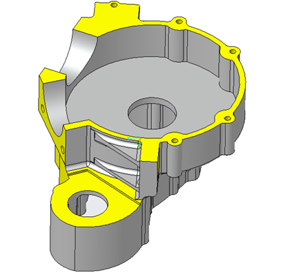
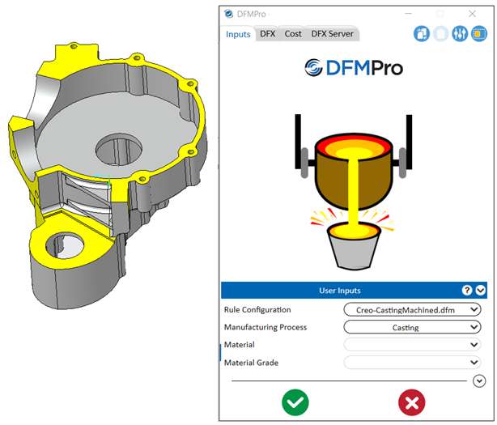
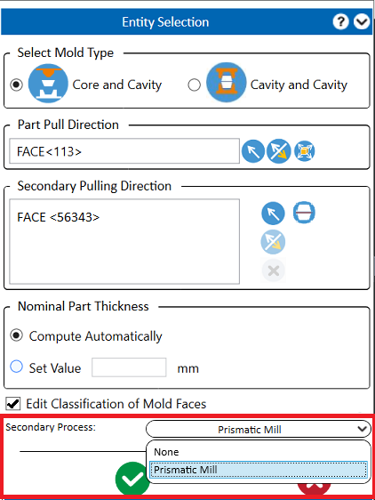
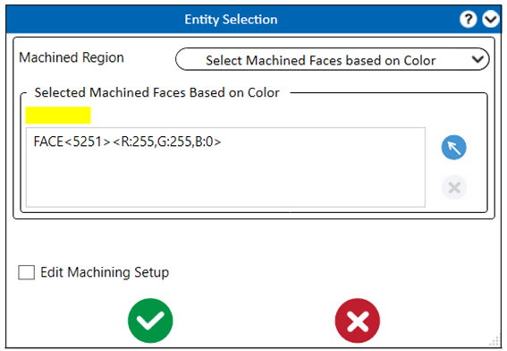
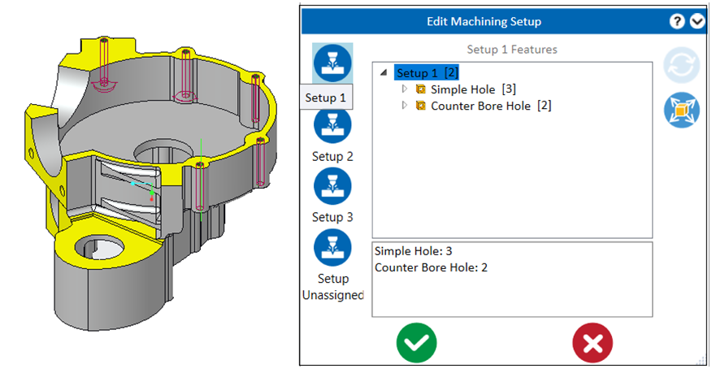
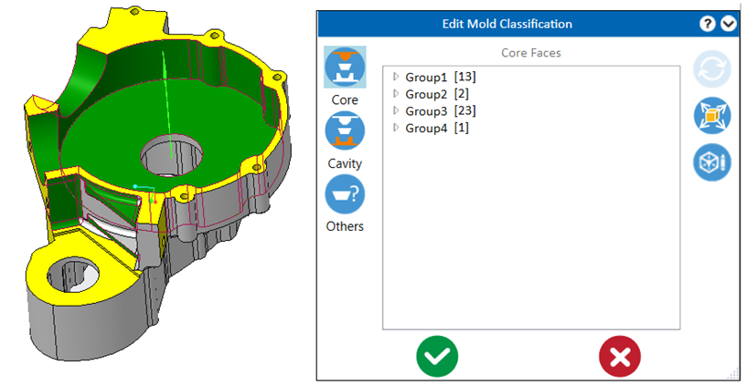
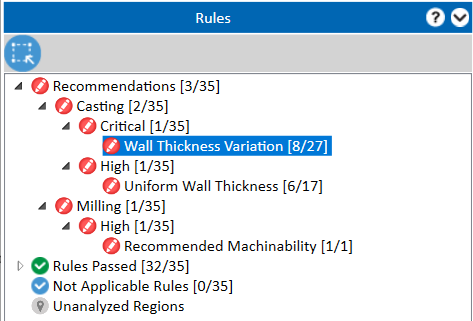

CAD パーツを開きます。
製造プロセスとして 鋳造 を選択し、必要な入力情報をすべて追加します。
 Analyze ボタンをクリックして、DFMPro の実行を進めます。
Analyze ボタンをクリックして、DFMPro の実行を進めます。
表示されたエンティティ選択グループボックスで、パーツの引き抜き方向 を定義します。
金型面の分類を編集 チェックボックスを選択します。
必要に応じて、副次プロセスのドロップダウンボックスからいずれかのオプションを選択します。
モデルに鋳造後加工領域が含まれている場合、DFMPro では複数のプロセスに対して同時に解析を実行し、統合された DFMPro の結果を取得することができます。
対応している複合プロセス:
Casting "鋳造" と Prismatic Mill "フライス加工"
Die-Cast "ダイカスト" と Prismatic Mill "フライス加工"
Sand-Casting "砂型鋳造" と Prismatic Mill "フライス加工"
以下のセクションでは、鋳造とフライス加工の解析を組み合わせて、統合された DFMPro の結果を取得するための手順を段階的に説明します。
同様の手順で、ダイカスト／砂型鋳造とフライス加工の解析も実行できます。

製造プロセスとして「鋳造」を選択すると、DFMPro は副次プロセスの選択肢として、フライス加工 および なし をドロップダウンリストで提供します。

CAD パーツを開きます。
製造プロセスとして 鋳造 を選択し、必要な入力情報をすべて追加します。
Analyze ボタンをクリックして、DFMPro の実行を進めます。
表示されたエンティティ選択グループボックスで、パーツの引き抜き方向 を定義します。
金型面の分類を編集 チェックボックスを選択します。
必要に応じて、副次プロセスのドロップダウンボックスからいずれかのオプションを選択します。

フライス加工 オプションを選択した状態で Analyze ボタンをクリックすると、加工領域用のエンティティ選択グループボックスが表示されます。
DFMPro の設定ファイルで定義されたカラ―コードと一致する、CAD モデル上の加工領域が表示されます。

加工セットアップを編集 チェックボックスを選択し、 Analysis ボタンをクリックして、複数プロセスでの解析を実行します。
選択された加工領域に基づき、対象となる加工フィーチャーのみに対して 加工セットアップ が作成されます。ユーザーはこれらのセットアップを確認および変更できます。
金型壁の分類 - DFMPro は、主引き抜き方向および副引き抜き方向に基づいて、面を コア、キャビティ、サイドアクション に分類します。

注記:
鋳造フィーチャー面および部分的に着色された加工フィーチャー面（加工フィーチャーとして分類されていないもの）のみが金型壁分類の対象となり、これらの面が鋳造ルール解析に使用されます。

OK ボタンをクリックし、定義された分類に基づいて DFMPro の解析を続行します。
ルールグループボックス内に、DFMPro は選択内容に基づいたルールカテゴリを表示します。
